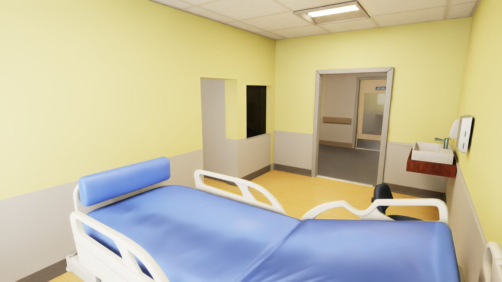
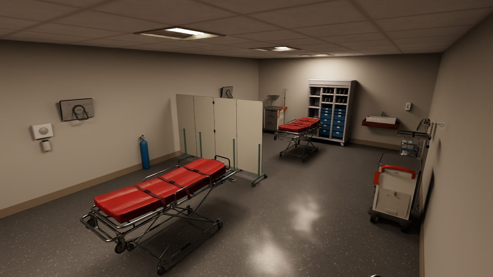
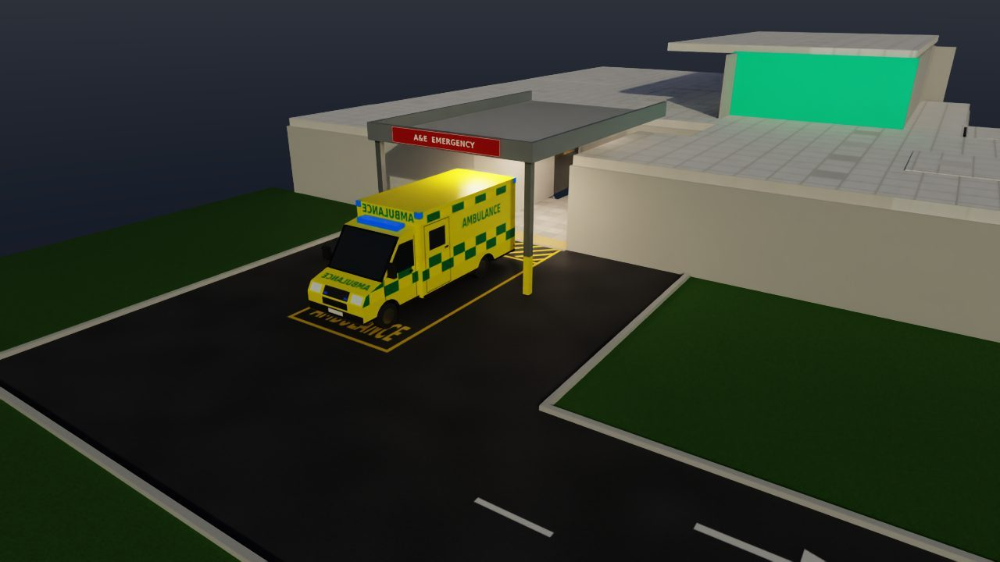

Case study: healthcare
WardZero, the hospital where robots train before they meet patients
A simulated hospital with a surgical wing, a ward and a small A&E, built to UK hospital guidance. The reference robot is a Unitree G1 humanoid with BrainCo hands.
- Robot
- Unitree G1, 29 DoF, two BrainCo Revo2 hands
- Setting
- Hospital with a surgical wing, a six-bed ward and an A&E
- Simulators
- NVIDIA Isaac Sim and MuJoCo, on one robot interface
- Stage
- Simulation. Open source, Apache-2.0
The problem
Hospitals are hard places for robots
Hospitals are full of things robots find difficult: self-closing fire doors, bed lifts, long reflective corridors, trolleys parked against the walls and people everywhere. You cannot test a robot on a live ward until it has proved itself somewhere else.
WardZero is that somewhere else. Feedback on the first version said lifts and fire doors mattered most, so version 2 adds them, with physics, in both simulators.
Built to guidance
Closer to a real UK hospital
Version 2 follows NHS England and UK Government guidance for hospital buildings. Each door and lift runs the same control code in Isaac Sim and MuJoCo, and a fire-alarm signal closes every fire door in about 6 seconds while the lidar watches them move.
| Area | Guidance | What WardZero has |
|---|---|---|
| Fire doors | HTM 05-02 | Up to 22 fire doorsets with physics. The leaves close themselves, and magnets hold the corridor doors open until the fire alarm releases them. |
| Lifts | HTM 08-02 | Two pairs of bed lifts, car 1800 × 2700 mm, with call buttons, door timing, light curtains and fire recall. |
| Ward | HBN 04-01 | A six-bed ward with en-suite bedrooms, a nurse base and workstations with observation windows. |
| A&E | HBN 15-01 | An ambulance entrance, resus with two bays, majors cubicles, triage, minors, X-ray and walk-in reception. |
| Circulation | HBN 00-04 | A 4 m link corridor to the surgical wing, so two beds can pass. |
| Access | Approved Document M | Door opening forces under 30 N. Lift buttons between 0.9 m and 1.2 m above the floor. |







WardZero follows the guidance for robot testing. It is not a certified building design, and no fire engineer has reviewed it. Known gaps, such as ward bedroom doors narrower than the guidance recommends for beds, are listed in the project repository.
One interface, two simulators
The same software in MuJoCo, Isaac Sim and on the robot
The controller sends motor targets at 500 Hz and reads joint states, exactly as on the real G1. MuJoCo gives fast physics for training. Isaac Sim gives realistic rendering, a lidar and a head camera for testing navigation and perception.
Everything above the controller is identical in both, and one layout file builds the hospital for each simulator in the same world frame.
Robot agnostic
Bring a different robot
The hospital, the safety layer and the navigation stack contain no robot-specific code. A different robot brings its own model, simulator bindings and controller, and inherits everything else.
Controller training
2,048 robots learning at once on one GPU
PPO trains the whole-body controller in MuJoCo MJX, with 2,048 robots in parallel on a single RTX 3070. The curriculum moves from standing, to walking with arm targets, to following full-body motions.
A teacher policy with privileged data trains a student that uses only the sensors of the real robot. Stage A1, standing, is complete: survival rose from 0.05 to 0.97 in 39 million steps, in about an hour.
Control rate
500Hz
motor targets on the robot's own low-level interface, in both simulators.
Stage A1 survival
0.05 → 0.97
in 39 million steps, about one hour on one RTX 3070.
Map coverage
96.6%
of the floor the robot can reach, mapped during a 60-point route.
Safety and teleoperation
Every input goes through one safety layer
The mode manager has seven modes, from DAMP, with the motors off, to HOLD. A control lease sets which source has control, a watchdog sets HOLD if the signal stops, a hardware emergency stop overrides everything and speed zones on the map cap the speed.
Operators can teleoperate the arms and hands from a webcam. MediaPipe tracks the operator, so no VR headset is needed.
Autonomy
A map you can check against the building
slam_toolbox maps the hospital while Nav2 with the MPPI controller drives a 60-point route through the hospital and the surgical wing. Because the simulated building is exact, the map can be scored: 99.6% of wall cells sit within 0.10 m of the Isaac Sim ground truth.
Status
Simulation stage, in development. All tests used simulation only. No test of the transfer from simulation to a real robot is complete yet.
Standing (stage A1) is trained. Walking (stage B) and full-body motion tracking (stage C) are not trained yet, so the walking in these clips uses a placeholder policy.
Code: hospital-sim and its component repositories, Apache-2.0. The renders show third-party assets under their own licences: Lightwheel SimReady (CC BY-NC 4.0), NVIDIA Isaac for Healthcare (Apache 2.0) and the NVIDIA Isaac Sim hospital building (NVIDIA Limited Use Content).

Planning robots for a hospital or a care setting?
We can model your building, its doors and its lifts, and test a robot's routes before it sets foot on a ward.